|
| ||
|
| ||
Brought to you by Inside Microsoft FrontPage, a ZD Journals publication. Click here for a free issue  .
.
Contents
Introduction
Discussion Web Basics
Running the Wizard
Restricting Access
Fine-Tuning the Discussion Web
Testing the Discussion Web
Deleting Messages
Editing Messages
Editing Other Pages
Many FrontPage developers--perhaps especially those with a background in HTML coding--steer away from creating discussion groups or discussion Webs in FrontPage®. Since they're such a complex feature of Web sites, it seems logical that they'd be difficult to create. In reality, though, FrontPage includes a wizard that makes setting up discussion Webs relatively easy. Moreover, discussion Webs can be a powerful addition to your Web site. For an initial investment of time on your part, they provide your site with continuously changing content that gets people involved and drives increased traffic to your site.
We'll explore FrontPage's discussion Web feature in this article. As well, we'll give you some pointers on maintaining the Web on a long-term basis.
In simplest terms, a discussion Web is an area on a Web site where visitors can post messages and read or respond to messages that others have posted. They're the Web equivalent of a newsgroup or an e-mail discussion list; Figure A shows an example.
Figure A: We'll create a dynamic discussion Web like this one.
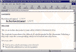
Click on image for a closer look.Each of the messages in a discussion Web is actually a separate HTML document, which is automatically generated when a visitor completes a standard HTML form. Tying the Web together is a table of contents page that keeps track of how the various messages are related and allows visitors to move between messages. A discussion Web can also include a search form.
As you'll see shortly, you can restrict access to the Web or allow any visitor to read and post messages. If you choose to create a restricted Web, FrontPage will add a self-registration form for you. Now, let's get started with a sample discussion Web.
Note The FrontPage Registration Form Handler doesn't work on Microsoft Personal Web Server (PWS). To use that feature, you'll have to publish your Web to another type of server. However, you can create a non-restricted discussion Web on PWS.
Begin by launching FrontPage Explorer and choosing Create A New FrontPage Web in the Getting Started dialog box. Click OK to access the New FrontPage Web dialog box shown in Figure B.
Figure B: Create a new Web using the Discussion Web Wizard.
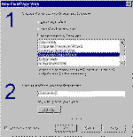
Click on image for a closer look.Choose Discussion Web Wizard from the scrolling list box, and then type Discussion in the text box. Click OK to continue. (Note that we're creating a separate subweb to hold our discussion group.)
When the first wizard page appears, click Next to move to the page shown in Figure C. Here you can choose which of the following features to include: table of contents, search form, threaded replies, and confirmation page. (Table A summarizes what each of these features entails.) We recommend that you leave all the check boxes selected, although on a production site you might choose not to include one or more features. Click Next to continue.
Figure C: Pick the features your discussion Web should include.
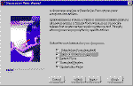
Click on image for a closer look.Table A: Discussion Web features
| Submission form | The HTML form visitors use to create messages; required. |
| Table of contents | An automatically generated list of all messages; the table of contents makes it easy for visitors to go to specific messages; essential for large discussion Webs. |
| Search form | This form allows visitors to search for specific text strings in your discussion Web; recommended for large discussion Webs. |
| Threaded replies | This feature groups messages by topic; responses to a message will appear directly beneath the original message. Threaded messaging imposes order on what could otherwise be a chaotic discussion Web. |
| Confirmation page | People who post messages will see a confirmation page, letting them know their message has been added; without a confirmation page, visitors often post their messages more than once, cluttering up the discussion Web. |
On the next wizard page, shown in Figure D, you can give your discussion Web a descriptive name. FrontPage will generate a shorter name (beginning with an underscore character) for the folder where all the messages will appear--ours is called _disc. You should write this name down because you'll need to access that folder to delete or edit messages. Click Next to continue.
Figure D: Give your discussion Web a descriptive name.
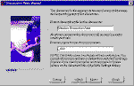
Click on image for a closer look.The wizard page shown in Figure E lets you specify the fields that will appear on the submission form. Subject and Comments are the two standard fields, but you can also choose to include either a Category or Product field. Either of these fields will present the user with a dropdown menu of choices that you've specified. For now, choose the Subject, Category, Comments option; then, click Next.
Figure E: Messages posted to the discussion Web can include several standard fields.
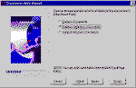
Click on image for a closer look.It's on the fifth wizard page, shown in Figure F, that you can choose to restrict access to the discussion Web. If your Web is part of a public Web site and you're concerned about people posting libelous or offensive messages, you should probably restrict access. So, choose the Yes, Only Registered Users Are Allowed option, and click Next to continue.
Figure F: If you restrict access to the Web, users must register before they can post messages.
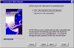
Click on image for a closer look.The sixth wizard page lets you specify the order in which messages will appear. Choose Newest To Oldest and then click Next. The seventh page lets you make the table of contents the home page of the Web. Since we've created the discussion Web as a subweb, leave the default option selected and click Next.
On the eighth page of the wizard, shown in Figure G, you can specify what types of information the search form will return. Leave the default setting in place and click Next.
Figure G: Specify the information your search form should return.
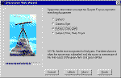
Click on image for a closer look.The ninth wizard page lets you specify a theme. Click the Choose Web Theme button now and pick one of the FrontPage themes listed. Click OK and then Next to continue.
On the wizard page shown in Figure H you can specify whether the discussion Web will use frames and how they will look. In the three options that use frames, one frame displays the table of contents while the second displays the current message. The last two options add a third frame, which can display a page banner or other general information.
Figure H: You can set up your discussion Web with or without frames.
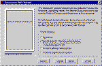
Click on image for a closer look.We recommend using frames in discussion Webs because they simplify navigation and reduce scrolling. For now, choose the Dual Interface option button and click Next to continue. Finally, click Finish to let FrontPage start creating your discussion Web.
Once the wizard is done, it will launch FrontPage Editor and open a page titled Web Self-Registration Form. As Figure I shows, this page includes a comment section describing the steps you must now take.
Figure I: FrontPage generates a self-registration form users must complete before entering the discussion Web.
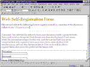
Click on image for a closer look.First, switch back to FrontPage Explorer and choose Permissions from the Tools menu to open the dialog box shown in Figure J. In the Settings tab, select the Use Unique Permissions For This Web and click Apply. Then, click the Users tab and select the Only Registered Users Have Browse Access option button. Click OK to close the dialog box.
Figure J: You can restrict access to the subweb in this dialog box.
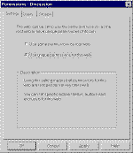
Click on image for a closer look.Next, choose Open from the File menu and open the root Web under which the discussion subweb will appear. Switch back to FrontPage Editor and delete the comment text. Then, save web_selfregistration_form.htm in your root Web.
Note You shouldn't save the registration page in the discussion Web itself. Doing so would prevent users from registering, because they wouldn't be able to access the registration form.
Later, you can add a link from your root Web's home page (or wherever you like) to the self-registration page. Visitors should be directed to that page before they enter the discussion Web.
The Web is now operational, but we need to make a couple of modifications before we test it. First, re-open the discussion Web in FrontPage Explorer. Choose Web Settings from the Tools menu and click the Advanced tab to switch to the page shown in Figure K. Select the Show Documents In Hidden Directories check box and then click OK. Doing so will let you see--and later edit--the files in the _disc folder.
Figure K: By making hidden folders visible, you'll have access to the discussion Web documents.
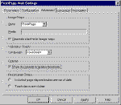
Click on image for a closer look.Next, double-click disc_post.htm, which is the message submission form. You'll see that this page includes a Category drop-down list. Double-click the list to open the Drop-Down Menu Properties dialog box shown in Figure L. As you can see, FrontPage generated five categories, which you can change by clicking Modify while each is selected. When you're done, click OK. Then, delete the comment text next to the drop-down list.
Figure L: Edit the list of categories FrontPage generated on the submission page.
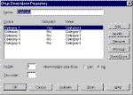
Click on image for a closer look.Now, let's see how the discussion Web works. Open the live copy of the self-registration page and register yourself. Your password must be at least six characters long, and your username shouldn't include any spaces--if it does include spaces, FrontPage will substitute underscore characters.
Note We recommend that you edit the self-registration form to specify these limitations on user names and passwords. You should also consider adding form-field validation to prevent data-entry errors.
When the registration confirmation page appears, click the link that takes you directly to the discussion Web, as shown in Figure M. (At first, of course, your table of contents will be empty.) Post a message and then refresh the display to update the table of contents.
Experiment with the other buttons that appear, posting a reply to your first message, searching for specific text strings, and moving from message to message in order. As you'll see, the FrontPage discussion Web is quite robust and easy to use.
Figure M: Threaded messaging keeps your discussion Web organized.
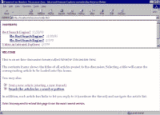
Click on image for a closer look.The most common task in maintaining a discussion Web is deleting messages. You’ll need to do this when messages get so old that they’re irrelevant, when people double-post messages by mistake, or when messages are offensive or libelous.
To delete a message, you must first determine its filename. The easiest way to do this is to open the Web in your browser and point the mouse at the message in the contents frame. As Figure N shows, the filename will appear in the status bar.
Figure N: The message’s filename appears in the status bar in the browser.
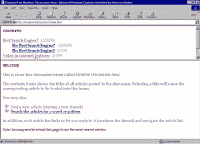
Click on image for a closer look.Next, you must find where the discussion files are stored. To do so, open FrontPage Explorer and choose Web Settings from the Tools menu. Click the Advanced tab, and then enable the Show Documents In Hidden Directories check box, as Figure O shows. When you click OK, you’ll discover a new folder called _disc (assuming you created the Web following the instructions in last month’s article).
Figure O: Discussion Web messages are saved in a hidden directory, so you’ll need to enable the Show Documents In Hidden Directories check box.
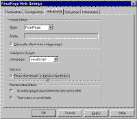
Click on image for a closer look.Double-click on the _disc folder to reveal its contents, as shown in Figure P. The Name column corresponds to the filename, of course; the Title column corresponds with the message’s subject. Find the document you want to delete, select it, and press [Delete] on your keyboard.
Figure P: Each message is stored in a separate, numbered HTML file.
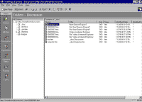
Click on image for a closer look.When you delete a message—even the first message in a thread—only that one message is removed. FrontPage automatically reconnects the other messages in the thread. To delete an entire thread, then, you must delete each individual message.
Deleting multiple messages is easy: just hold down [Ctrl] as you click on each one. If you want to delete all messages before a certain date, sort the list first by clicking on the Modified Date column. (Be sure to delete only message documents, not files like toc.htm or tocproto.htm.)
The other common task for discussion Web administrators is editing messages. Perhaps you need to add an editor’s note or remove offensive material from an otherwise acceptable message.
To edit a message, just find it in FrontPage Explorer as before and then double-click on it to open it in FrontPage Editor, as Figure Q shows. Make your changes there and save the file.
Figure Q: You can edit message files just like any HTML document.
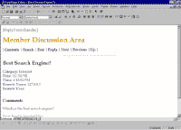
Click on image for a closer look.Two notes are important here. First, each message file includes several FrontPage components. Be sure not to change or delete these; just edit the text. Second, as a matter of courtesy, you should consider notifying the poster if you significantly change his or her message.
Messages aren’t the only parts of the discussion Web that you can edit. For example, on the initial page of the Web, you might want to include more detailed information about the purpose of the Web or give a list of rules for posting.
To do so, open the file disc_welc.htm in FrontPage Editor and change it as you wish. Again, be careful to only change the text, not the other parts of the page. Similarly, you can edit the confirmation page (disc_cfrm.htm), the post page (disc_post.htm), and the search page (disc_srch.htm).
Copyright © 1999, Ziff-Davis Inc. All rights reserved. ZD Journals and the ZD Journals logo are trademarks of Ziff-Davis Inc. Reproduction in whole or in part in any form or medium without express written permission of Ziff-Davis is prohibited.
Did you find this material useful? Gripes? Compliments? Suggestions for other articles? Write us!
© 1999 Microsoft Corporation. All rights reserved. Terms of use.
{kind=link}
{kind=link}
{kind=link}
{kind=link}
{kind=link}
{kind=link}
{kind=link}
{kind=link}
{kind=link}
{kind=link}
{kind=link}
{kind=link}
{kind=link}
{kind=link}
{kind=link}
{kind=link}
{kind=link}